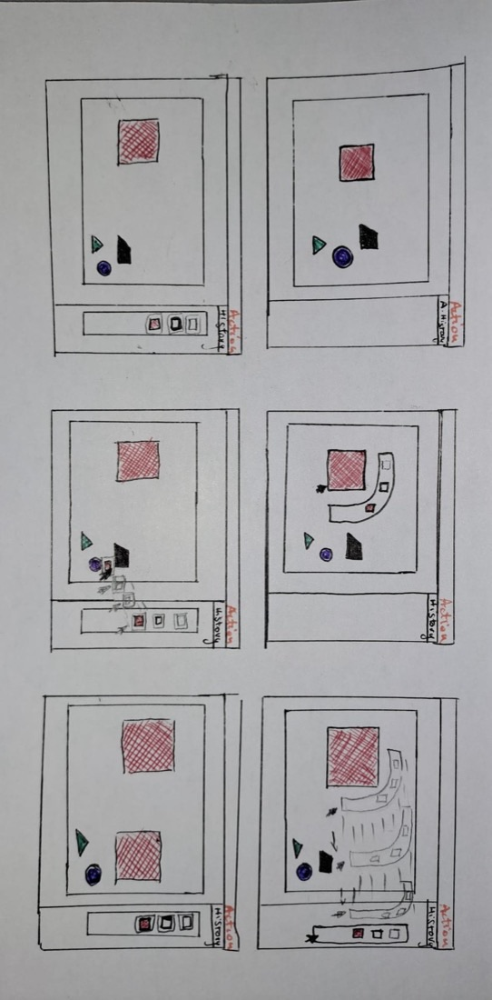

Anis Slimani
Inter-disciplinary Creative

STEPSTRATE is a tool designed to enhance version management in collaborative environments, addressing common problems with traditional version history systems: limited interactivity, low discoverability, and poor customization. Developed on principles of situated interaction, it introduces action-based tracking, intuitive customization, and improved transparency.
Using feedforward design, STEPSTRATE offers a more interactive and user-friendly way to manage changes and explore version history. The project emphasises usability and adaptability, making version history tools more accessible and efficient.
In collaboration with Yeajin AHN, Wenting BAI and Jihyun PARK
STEPSTRATE is a tool designed to enhance version management in collaborative environments, addressing common problems with traditional version history systems: limited interactivity, low discoverability, and poor customization. Developed on principles of situated interaction, it introduces action-based tracking, intuitive customization, and improved transparency.
Using feedforward design, STEPSTRATE offers a more interactive and user-friendly way to manage changes and explore version history. The project emphasises usability and adaptability, making version history tools more accessible and efficient.
In collaboration with Yeajin AHN, Wenting BAI and Jihyun PARK